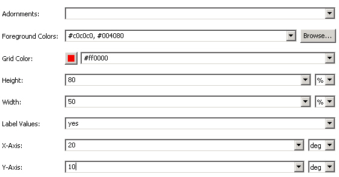

You can use the Theme editor to apply styles to charts. Apart from more general properties that you can use for styling, such as border an box properties, MCS provides some chart-specific properties.
The properties allow you to specify colors to match your data values and grid colors. You can turn chart adornments and labels on and off, and override component width and height hints for specific devices. You can define the size and row count of text input controls, and style selection lists.
To specify Foreground Colors matching the data sets, you use a color picker to build a list of comma separated hexadecimal color values. The Grid Color property takes a single value, either from the system colors or a color picker.
Chart X Axis and Chart Y Axis values give the rotation of the graph to produce a three-dimensional effect. Bar charts are rotated from the plane which goes back at right angles to the screen. Pie charts rotate from the plane of the screen and therefore need a larger angle to produce a useful effect.

Related topics
Specifying charts
Chart properties